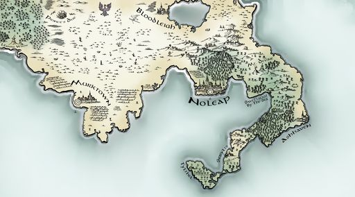
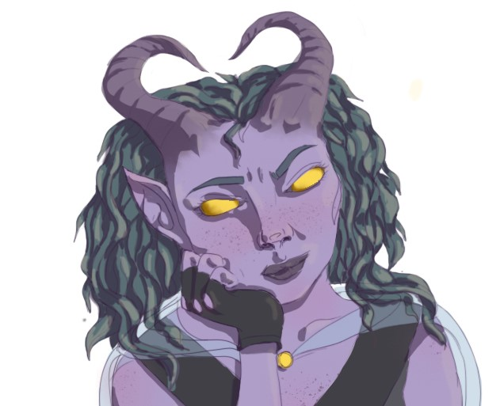
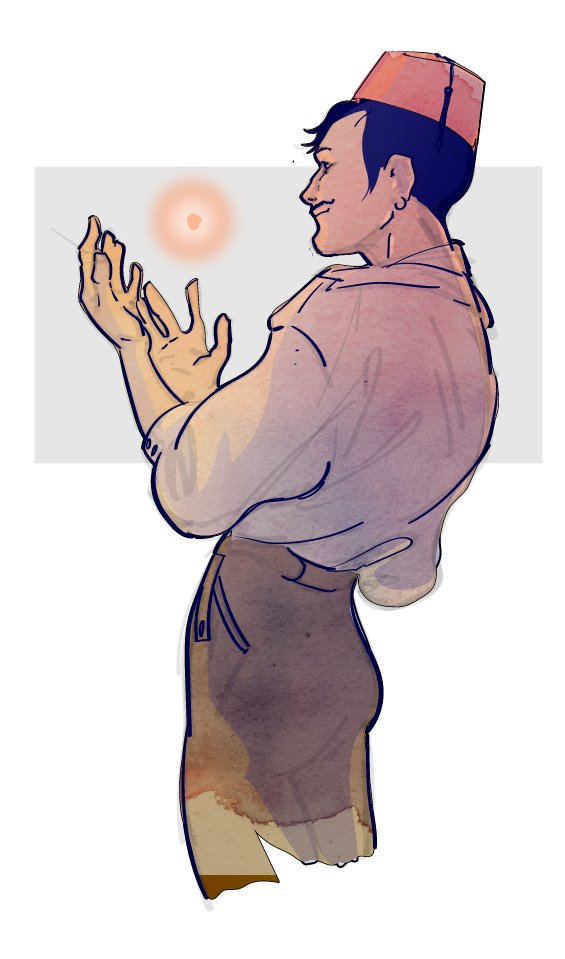
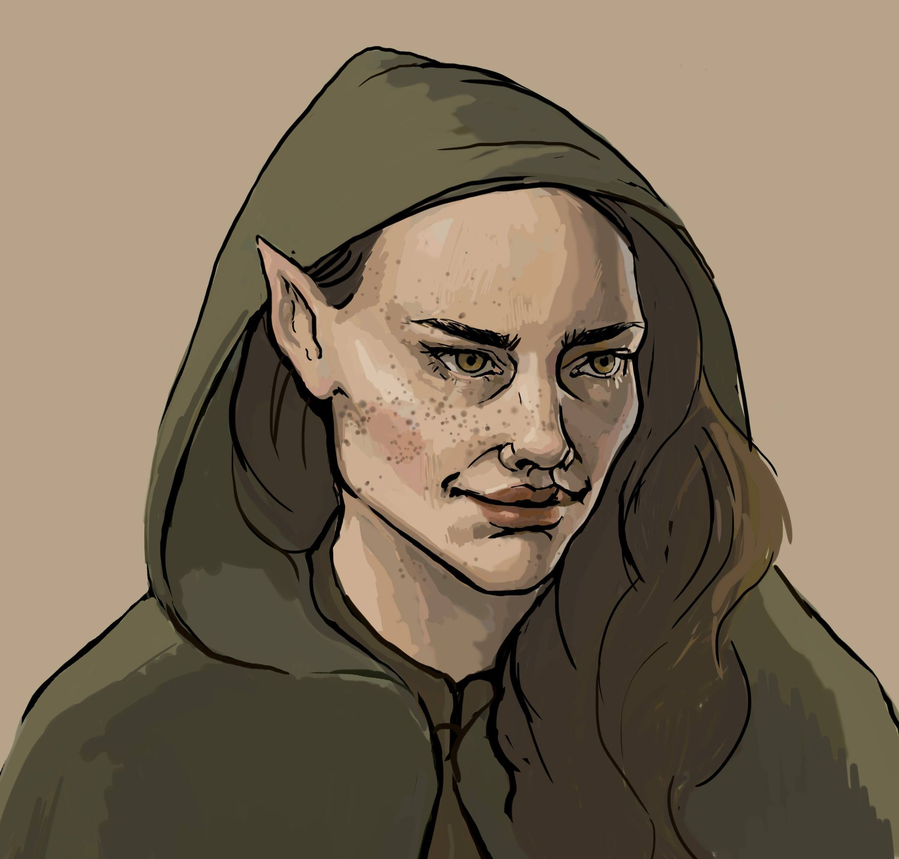
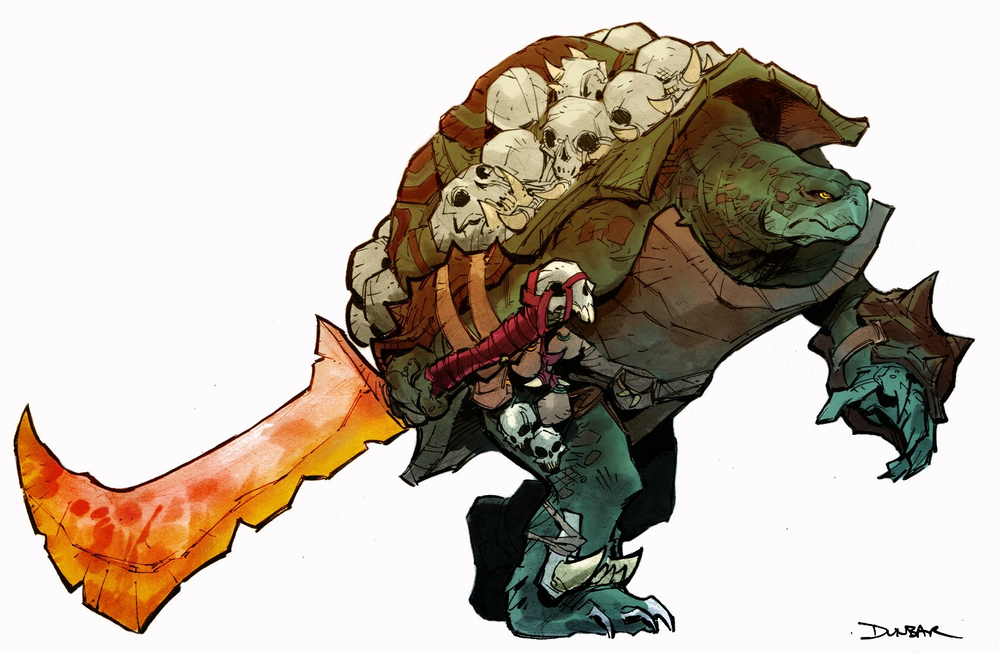
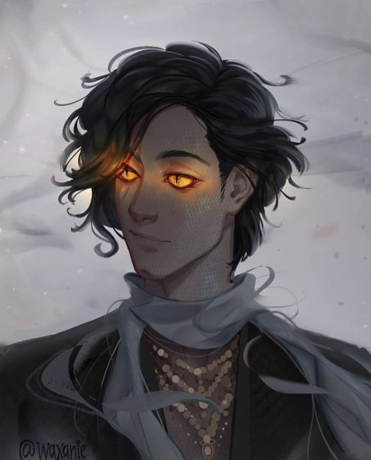

This is the story of our second DnD campaign!
The campaign is set in the Unmade Realms, in the region of The Southern Sprawl. When we begin our adventure, the characters meet in the little coast town called Sweetroot.
Characters
There are six characters adventuring together:
Violet
Violet is a young female tiefling from the city of Ashhaven. Not disclosing her real name, she goes by Violet, which is also the color of her skin. She has big horns on her head, a tail, and has golden yellow eyes with no pupils. Violet is a Swashbuckler rogue, and so she is very stealthy and a master at duelling. Her preferred weapons of choice are scimitars and daggers.
Enrico
Enrico Palazzo is a male human bard who is quite new to adventuring. He has a big moustache and wears a red fez, and has quite the extravagant style. He combines his singing skills with healing abilities, and casts spells to confuse his enemies.
Ava
Ava is a female half elf. She is a warlock and seems to gain power from a very mysterious book she carries around. Ava wields some powerful magic and destroys her enemies with the Eldritch blast. She has a beautiful appearance which she uses to her advantage and can be very charming.
Krem
Krem is a male tortle, a huge reptilian creature with a large shell. He is a barbarian, immensely strong and due to his years in the army he is a skilled fighter in battle. Krem gets much power from his barbarian rages and it happens that ancestral spirits appear to join him in his fights.
Raven
Raven is a male drow. He has not always been a drow, however, he grew up as a halfling but through a fateful ritual he was reborn as a drow and cast out of his community. As a drow he is sensitive to sunlight, which gives him disadvantages in the surface world. Raven is a savant, and has an impressive intellect, he can see the weaknesses of enemies and learn languages at an extremely quick rate. He is a very quiet and apprehensive character.
Sava
Sava is a male Yuan-ti, however, he hides what he is through glamours and makeup to avoid persecution. He has an androgenous appearance, and has glowing yellow eyes and dark hair. Sava is a sorcerer and uses spellcasting to defeat his enemies. He has many contacts providing him with information, and always seems to be one step ahead in the secret ongoings in the cities.
This is the main soundtrack of the campaign.